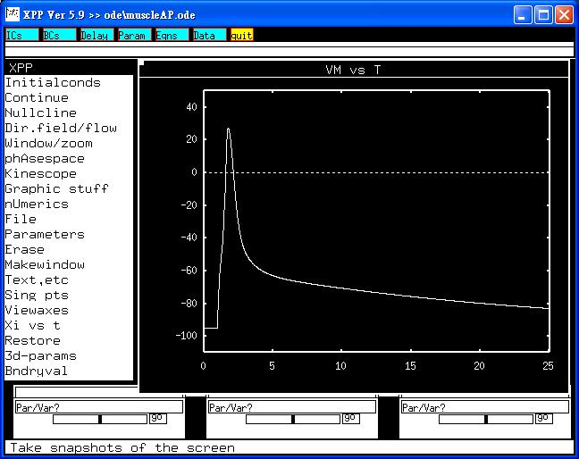

This is the readme.txt for the model associated with the paper Adrian RH, Chandler WK and Hodgkin AL. Voltage clamp experiments in striated muscle fibres. J Physiol 1970;208:607-644 Abstract: 1. Membrane currents during step depolarizations were determined by a method in which three electrodes were inserted near the end of a fibre in the frog's sartorius muscle. The theoretical basis and limitations of the method are discussed. 2. Measurements of the membrane capacity (CM) and resting resistance (RM) derived from the current during a step change in membrane potential are consistent with values found by other methods. 3. In fibres made mechanically inactive with hypertonic solutions (Ringer solution plus 350 mM sucrose) step depolarizations produced ionic currents which resembled those of nerve in showing (a) an early transient inward current, abolished by tetrodotoxin, which reversed when the depolarization was carried beyond an internal potential of about +20 mV, (b) a delayed outward current, with a linear instantaneous current-voltage relation, and a mean equilibrium potential with a normal potassium concentration (2.5 mM) of -85 mV. 4. The reversal potential for the early current appears to be consistent with the sodium equilibrium potential expected in hypertonic solutions. 5. The variation of the equilibrium potential for the delayed current (V'K) with external potassium concentration suggests that the channel for delayed current has a ratio of potassium to sodium permeability of 30:1; this is less than the resting membrane where the ratio appears to be 100:1. V'K corresponds well with the membrane potential at the beginning of the negative after-potential observed under similar conditions. 6. The variation of V'K with the amount of current which has passed through the delayed channel suggests that potassium ions accumulate in a space of between 1/3 and 1/6 of the fibre volume. If potassium accumulates in the transverse tubular system (T system) much greater variation in V'K would be expected. 7. The delayed current is not maintained but is inactivated like the early current. The inactivation is approximately exponential with a time constant of 0.5 to 1 sec at 20¢X C. The steady-state inactivation of the potassium current is similar to that for the sodium current, but its voltage dependence is less steep and the potential for half inactivation is 20 mV rate more positive. 8. Reconstructions of ionic currents were made in terms of the parameters (m, n, h) of the Hodgkin-Huxley model for the squid axon, using constants which showed a similar dependence on voltage. 9. Propagated action potentials and conduction velocities were computed for various conditions on the assumption that the T system behaves as if it were a series resistance and capacity in parallel with surface capacity and the channels for sodium, potassium and leak current. There was reasonable agreement with observed values, the main difference being that the calculated velocities and rates of rise were somewhat less than those observed experimentally. ---------------- To run the models: XPP: start with the command xpp ode\muscleAP.ode This simulation will make graphs similar to figure 23B in the paper:  Bard Ermentrout's website http://www.pitt.edu/~phase/ describes how to get and use xpp. These model files were submitted by: Dr. Sheng-Nan Wu National Cheng Kung University Medical Center Tainan 70101, Taiwan snwu@mail.ncku.edu.tw